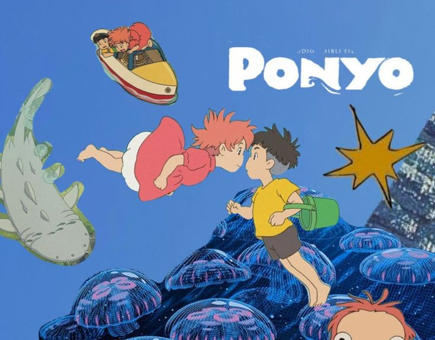

My Favourite Scene from Anything
Movie: Ponyo
This scene where Ponyo and Sosuke watch the ocean waves is so magical and calming. The animation is breathtaking.
TV Show: Anne with an E
One of my favourite moments is when Anne delivers her passionate speech about imagination and belonging.
Music: Please, Please, Please, Let Me Get What I Want - The Smiths
This song perfectly captures the mood of longing and hope I love.